Layanan Unggulan
Tralis Jendela
🪟 Tralis Jendela – Keamanan Maksimal, Tampilan Tetap Elegan
Lindungi keluarga dan rumah Anda tanpa mengorbankan keindahan. Tralis jendela kami hadir dengan desain modern yang menyatu sempurna dengan berbagai gaya hunian.
✨ Keunggulan Tralis Kami:
- ✔ Konstruksi kuat & tahan lama
- ✔ Desain minimalis, tidak mengganggu estetika rumah
- ✔ Anti karat & tahan cuaca ekstrem
- ✔ Pengerjaan rapi oleh tenaga profesional
🔒 Keamanan bukan lagi pilihan, tapi kebutuhan. Dengan tralis berkualitas, Anda bisa tidur lebih nyenyak tanpa khawatir.
🏡 Lebih dari sekadar pelindung — ini investasi untuk ketenangan Anda.
💬 Konsultasikan desain dan kebutuhan Anda sekarang juga!
Pagar Minimalis
🏠 Pagar Minimalis — Aman, Rapi, dan Bikin Depan Rumah Lebih Elegan
Pagar adalah kesan pertama rumah Anda. Kami bikin pagar minimalis yang tidak cuma kokoh, tapi juga proporsional dengan desain fasad rumah, supaya terlihat modern dan tidak "berat".
✨ Keunggulan Pagar Kami:
- ✔ Desain bisa custom (minimalis garis, kombinasi plat, atau model simpel)
- ✔ Opsi pagar sliding atau swing (menyesuaikan lahan)
- ✔ Las rapi, sambungan halus, dan finishing lebih awet
- ✔ Dikerjakan presisi supaya bukaan nyaman dipakai harian
Mau model yang simpel tapi berkelas? Atau model lebih tertutup untuk privasi? Tinggal bilang, nanti kami arahkan desain yang cocok dengan kebutuhan dan budget Anda.
🛠️ Target kami: pagar terlihat rapi dari jauh, detailnya halus saat dilihat dekat.
💬 Konsultasi ukuran, model, dan estimasi harga sekarang juga!
Kanopi
☔ Kanopi — Teras & Garasi Lebih Nyaman, Tampilan Tetap Clean
Kanopi yang bagus itu bukan cuma "ada atap". Harus kuat, aliran airnya benar, dan rapi supaya menyatu dengan bangunan. Kami kerjakan kanopi untuk teras, carport/garasi, balkon, sampai area belakang rumah.
🔩 Yang Kami Utamakan:
- ✔ Rangka kokoh dengan desain minimalis (custom ukuran & bentuk)
- ✔ Kemiringan dan jalur air dibuat rapi supaya lebih aman saat hujan
- ✔ Finishing halus + dasar anti karat untuk pemakaian jangka panjang
- ✔ Opsi tambahan: talang air / penutup sisi biar tampilan lebih rapi
Anda bisa konsultasi dulu untuk ukuran dan model, biar hasil akhirnya tidak mengganggu tampilan rumah dan tetap nyaman dipakai setiap hari.
🌦️ Hasil akhir: kuat, rapi, dan perawatannya mudah.
💬 Minta rekomendasi model kanopi yang cocok untuk rumah Anda.
Railing Tangga
🧱 Railing Tangga — Aman untuk Keluarga, Tetap Terlihat Modern
Railing bukan sekadar pegangan, tapi elemen penting untuk keselamatan dan estetika. Kami kerjakan railing untuk tangga, balkon, dan teras dengan model minimalis modern yang rapi.
✅ Detail yang Kami Perhatikan:
- ✔ Proporsi dan jarak jeruji dibuat nyaman dan aman
- ✔ Sudut dan sambungan halus (tidak tajam)
- ✔ Finishing rapi, lebih tahan cuaca dan pemakaian harian
- ✔ Desain bisa disesuaikan dengan interior/eksterior rumah
Kalau Anda punya referensi model (foto) kami bisa bantu sesuaikan agar tetap kuat secara struktur dan hasilnya terlihat premium.
👌 Nyaman dipegang, aman dipakai, dan bagus dilihat.
💬 Konsultasi model railing sekarang.
Galeri Proyek
Geser galeri ke samping untuk melihat foto kanopi, pagar, dan proyek lainnya.
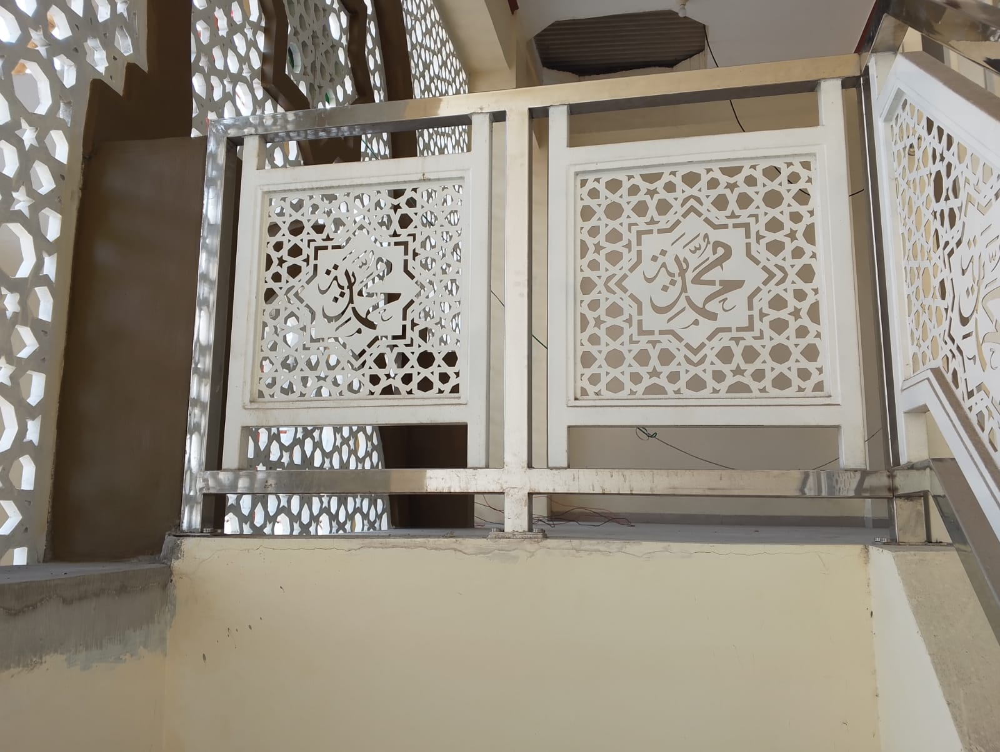
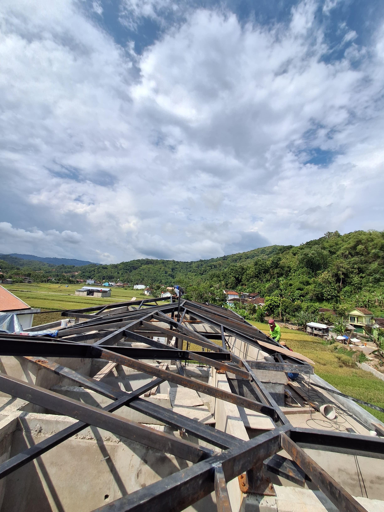
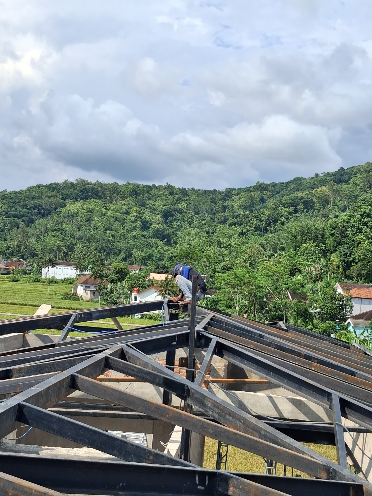
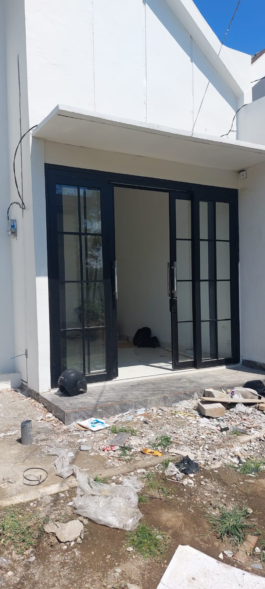
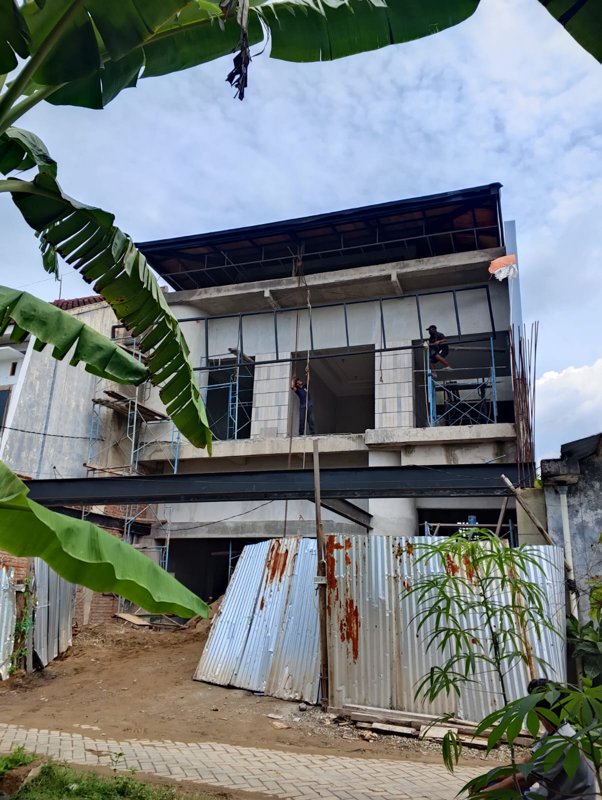
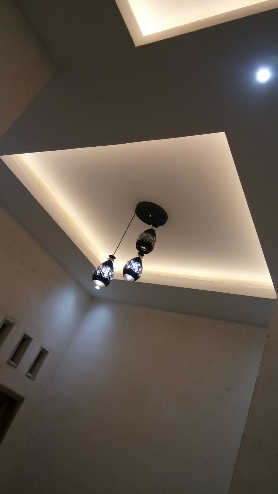
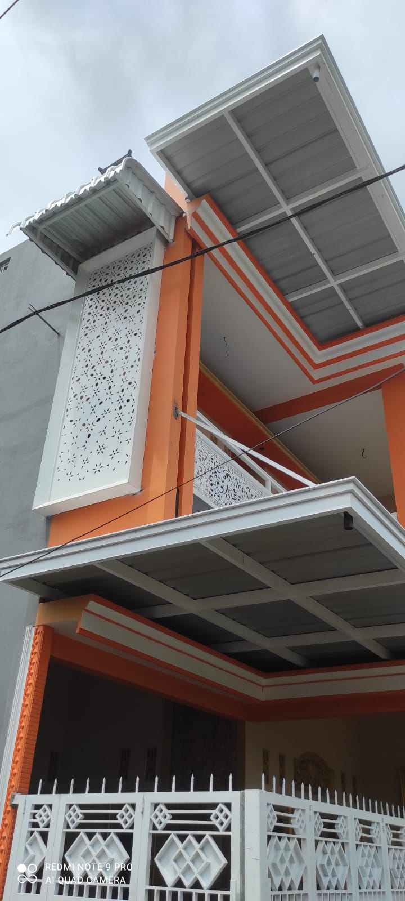
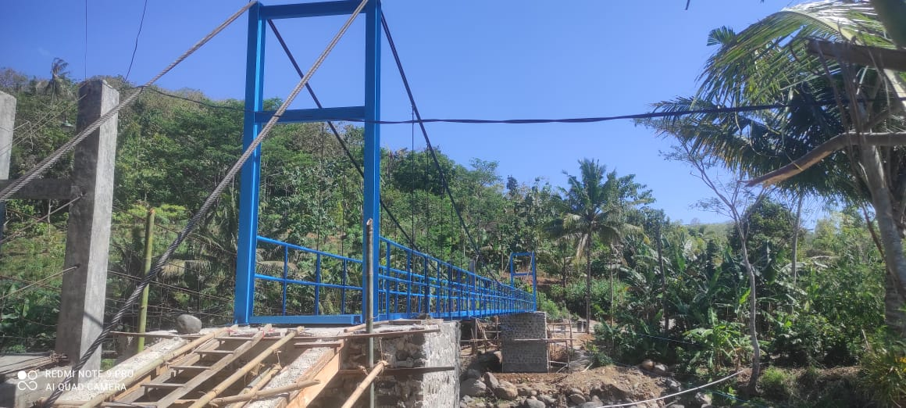
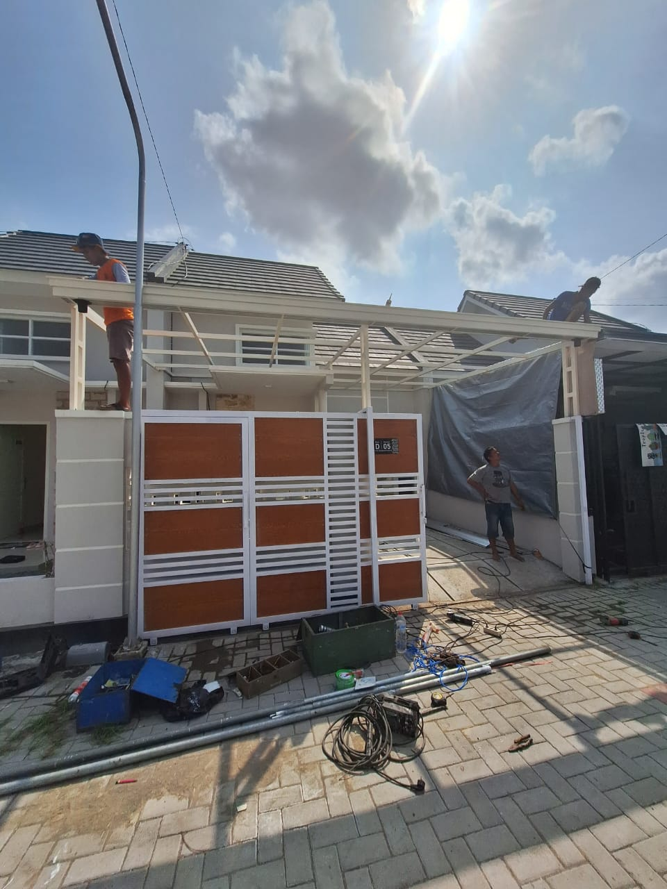
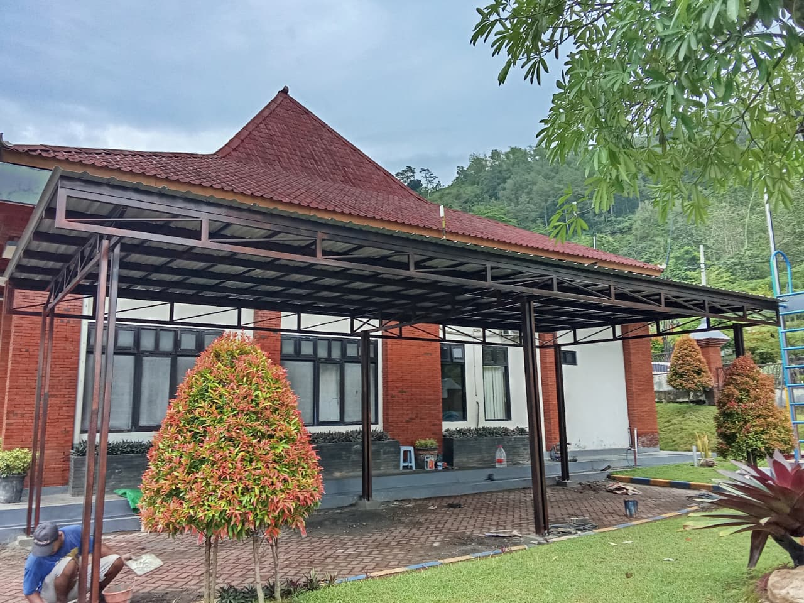
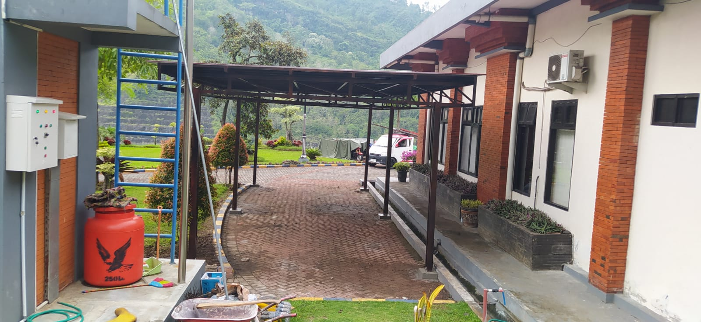
Tentang Kami
“Bengkel tralis terpercaya sejak 2018.” Kami bukan sekadar bengkel. Kami adalah tangan terampil yang menjaga rumah Anda tetap kokoh, aman, dan indah — satu tralis pada satu waktu.